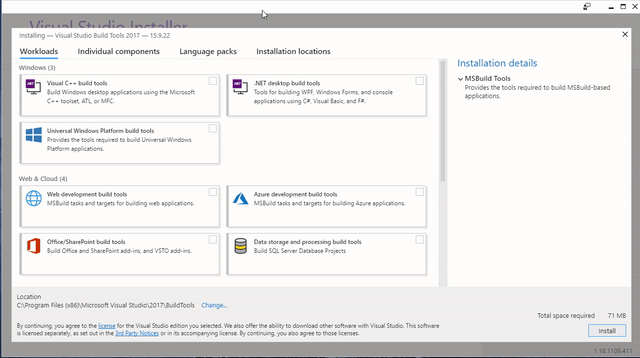
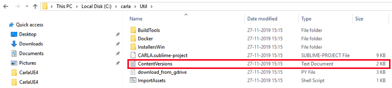
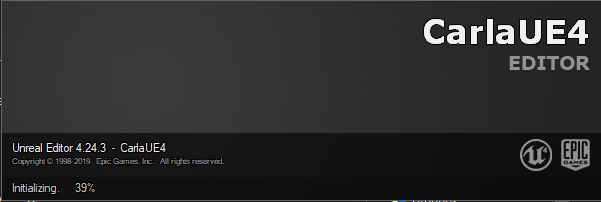
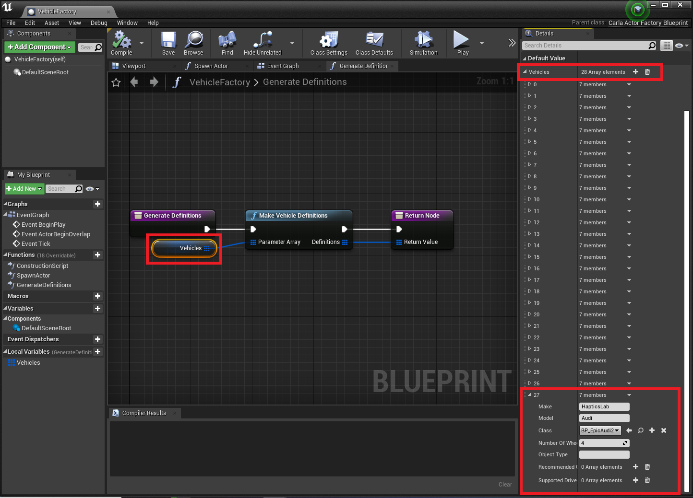

Setting up CARLA for Windows
Note
If you are a TU Delft student working on one of the TUD computers with CARLA installed, you can skip these instructions. Go to the setup guide for installing on TUD shared hardware.
This guide explains how to build CARLA on Windows, a pre-packaged version of CARLA is also available from their website but that version does not allow advanced customization and development. These instructions are based on the awesome documentation provided by the CARLA team. We tried to describe the steps a bit for our specific use. However, feel free to follow the CARLA installation notes (select the right version). If you get stuck somewhere, or you want to learn more, you could have a look at their documentation (make sure to select the correct version that corresponds to the CARLA version you want to use).
Note
For the most up-to-date installation instructions for CARLA, check out their documentation. The instructions
below are from CARLA 0.9.9 (the last version we tested JOAN with).
Introduction
Hardware Requirements
- x64 system: The simulator should run in any 64 bits Windows system.
- 50GB disk space: Installing all the software needed (Unreal, VS 2017, CARLA, and more) will require quite a lot of space. Make sure to have about 50GB of space (especially since you will also need a Visual Studio 2017 install)
- An adequate GPU: CARLA aims for realistic simulations, so the server needs at least a 4GB GPU. If VR is required, a Turing based GPU (for example the RTX branch of NVIDIA) is highly recommended!
- Two TCP ports and good internet connection: 2000 and 2001 by default. Be sure neither the firewall nor any other application is blocking these.
Required Software
Before you continue
Please make sure you have the following programs installed before continuing. If you will be installing them now, please read the instructions below carefully to prevent problems later on in the installation process.
- CMake: A small software package to make sure the CARLA build can compile C-code. Please follow the link, scroll down and download the "Windows win64-x64 Installer" (there is no need to download the source). When installing select the option "Add CMake to the system
PATHfor all users" - git: Ensures version control of both the python software and CARLA64-bit Git for Windows Setup. Please follow the link and download the "64-bit Git for Windows Setup.". During installation, you can keep all the default settings but especially make sure to select the (default) option "Use Git from the Windows command prompt".
- Make: Generates the executables. Please follow the link and download the "Complete package, except sources" setup. Install it and after installing add the binary folder (C:\Program Files (x86)\GnuWin32\bin by default) the system
PATHvariable. follow the link in the info box below if you're not sure how to do this. - PowerShell 5.0 or newer: If you have Windows 10, it already includes this. If however you are still using Windows 7, you need to update PowerShell to version 5.0 or newer to be able to use out-of-the-box build scripts provided with Carla. Follow steps 1 to 3 here
Besides these dependencies, you need to install the following software. How to do this is explained extensively below.
Important
When you already have installed versions of these tools, please make sure that the bin folders are added to the system's PATH variable! If you don't know how to do so, check 'Adding to System Variables'. This is needed to ensure that the programs can be found during the build process.
Visual Studio 2017
Visual studio 2017 is used as main building tool for the CARLA simulator. Make sure to use the 2017 version, newer or older versions will not work according to CARLA's documentation. There are two approaches you can follow:
(1) install the build tools (requires less disk space) or
(2) install VS2017 community edition.
Important
An important note from the CARLA documentation: "Other Visual Studio versions may cause conflict. Even if these have been uninstalled, some registers may persist. To completely clean Visual Studio from the computer, go to Program Files (x86)\Microsoft Visual Studio\Installer\resources\app\layout and run .\InstallCleanup.exe -full"
Approach 1: Build tools
For building CARLA, only the VS 2017 and .NET build tools are required, which requires significantly less disk space than a full version of Visual Studio. The build tools can be downloaded and installed by following the link above. You need to log in with your Microsoft account (Hotmail, Live, etc). Please make sure to download the "Build Tools for Visual Studio 2017 (version 15.9)" executable (Check Visual Studio 2017 (version 15.9) under "Filter by product family"). Download and run the installer.
In the installer, select the "Visual C++ build tools" and ".NET build tools" checkboxes in the left pane of the visual studio installer and select all the default options plus "Windows 8.1 SDK" in the column on the right. See the GIF below" 
Approach 2: Visual Studio 2017 community edition
Alternatively, you can install the full Visual Studio community edition, this is a complete code editor, but it will require some disk space. Download the Visual 2017 Studio Community edition installer here. When installing please make sure you install it with the following properties in Visual Studio Installer:
- Windows 8.1 SDK. You can select this from the installation details tab
- x64 Visual C++ Toolset Choose the Desktop development with C++, enabling an
x64command prompt that will be needed. To access this prompt type inx64in the search bar of Windows 10. If properly installed it should show up like this:
Unreal Engine 4.24
The Unreal Engine is the graphics and physics engine behind CARLA. To create your experiments, you'll need the engine itself and the Unreal editor. To install both, go to Unreal Engine and download the Epic Games Launcher. You will have to create an Epic Games account. In the Epic Games launcher go to 'unreal engine' in the left menu bar and then to 'library' and you should see something like this:

Download Unreal Engine 4.24.x and use the default install settings. Make sure to run it to check that everything was properly installed. Also, when right-clicking on CarlaUE4.uproject in C:\carla\Unreal\CarlaUE4, you should see an option to Generate Visual Studio project files (but don't click it).
Note
If you get an error while installing the Unreal engine stating you do not have permission to install to ... (error code like DP-06), exit the Epic Games installer. Also, make sure to complete quit the program (check in the system tray; is the Epic Game icon still there? Right-click → Exit). Then, run the Epic Game installer as administrator (right-click on Epic Game installer → Run as administrator). This should enable you to start the installation.
Python3 x64
JOAN is fully written in Python and all interfacing between JOAN and CARLA is done through the Python API, therefore you need to install Python 3. CARLA requires the x64 version of Python, else it will not work. There is even some speculation that if you have an x32 version installed it can cause conflicts, so it is best to only have x64. At the time of writing this guide, the working version of python is_Python 3.8.5__, though 3.9 has been shown to work too.
Note
If you are installing Python as localadmin on a shared TUD PC,
- set the installation directory to C:\python
- make sure to check the 'make available for all users' and 'add to path' boxes.
Having multiple versions of Python installed (even if they're all x64) can cause issues. If you don't need multiple versions, the best option is to get rid of the version(s) you don't really need. If you do need multiple versions, please make sure that the version you will be using for JOAN (3.8 if you've followed the above instructions) is the only version in your system and user PATH variable, this ensures the correct version is used when building the Python API.
To make sure the correct version of Python is used you can open a command-line window and type:
python
This should give a response similar to the one below. Please make sure that you are running the Python version you have just installed.
Python 3.8.5 (tags/v3.8.5:7b3ab59, Feb 25 2020, 23:03:10) [MSC v.1916 64 bit (AMD64)] on win32
Type "help", "copyright", "credits" or "license" for more information.
>>>
If Python does not start or if a different version is shown, you should make sure that the folder of your Python installation is in your PATH variables. Please check the bit on build dependencies above if you need help. If python opens Python 2.x, but you also have Python 3.x installed, usually typing python3 will open the python 3.x version. Another known issue on Windows 10 is Windows opening the app store, please check this page if that happens.
Please note the >>> symbols indicating that you are now within a python environment. To close Python again type:
>>> exit()
or
>>> quit()
Note
We noticed that having Anaconda installed besides Python can result in issues. Please let us know if you found a way to separate Anaconda from the freshly installed Python version.
Python editors
We recommend installing PyCharm as your Python editor (The Community version is free) because this is a suitable editor for object-oriented programming in Python.
Building and installing CARLA and the CARLA PythonAPI
Now that all dependencies are installed, we can move on and clone CARLA. We will then build CARLA and the Python API (needed by JOAN to interface with CARLA). Before continuing, please double-check if you have all the necessary software, and have it installed properly. The building and installation of the bare-bones CARLA simulator can be divided into the following steps:
- Clone the repository
- Get the latest CARLA assets
- Get specific JOAN assets
- Build PythonAPI
- Build and launch CARLA
- Wait and hope that your PC is fast enough to compile all the shaders in Unreal in a reasonable amount of time
- Adding JOAN Assets inside Unreal
The steps will be explained 1 step at a time with screenshots and command-line commands you can easily copy-paste.
Step 1: Cloning the CARLA repository
JOAN was tested with Carla version 0.9.9, other versions might work but no guarantees are given. To clone version 0.9.9 of the repository open a command window and navigate to the folder where you want to clone Carla (if you don't know how to use the cd command to navigate in a terminal, check out this page first). Please remember that the git clone command will also create a project folder named Carla at the current location. Now type the following command:
git clone https://github.com/carla-simulator/carla --branch 0.9.9
Important
The CARLA build will fail if the path to CARLA contains spaces, so please clone CARLA to a folder without spaces in the path. If in doubt; use C:\carla. To do this, navigate to C:\ in a command prompt and call git clone from there, the Carla folder will be created automatically.
After cloning, verify that you have actually cloned the repository, it should look like this:

Step 2: Getting the latest CARLA assets
Besides the code, CARLA uses assets that take up too much space for git. These are the vehicles and levels for example. To get the latest CARLA assets open up the folder Util in the Carla folder that you have just created in step 1, and open the file contentversions.txt, see below:

This text file contains the instructions on what to do to download the latest assets. Get the 0.9.9 version. You can also click this link. Note: this file is almost 10GB. To extract the compressed file, you can use 7-zip, for example.
Unpack these assets in C:\carla\Unreal\CarlaUE4\Content\Carla. If the directory does not exist, create it.
Step 3: Get specific JOAN Assets
To have a nice car interior that also turns the steering wheel when you turn your physical steering wheel, some extra assets are required. You can download them here. This folder contains the assets which are needed to accomplish this. The file structure is exactly the same as it should be in the CARLA content folder. Before you do that please unzip the folder and copy the contents of this folder to:
C:\carla\Unreal\CarlaUE4\Content
Now all relevant assets should be in the right place.
Step 4: Build the PythonAPI
The next step is to build the Python API, this is a python module that can be imported to connect to a running CARLA server. To build the python API open the 'x64 Native Tools Command Prompt for VS 2017' terminal as administrator.
Navigate to the directory where you cloned CARLA and run the following command (if you don't know how to use the cd command to navigate in a terminal, check out this page first):
make PythonAPI
You can see what should happen below:

If everything was successful you should be able to read
-[BuildPythonAPI]: Carla lib for python has been successfully installed in "C:\Users\<user>\repositories\carla\PythonAPI\carla\dist"!
Furthermore, a carla.egg file should be in C:\carla\PythonAPI\carla\dist:

The exact filename depends on the CARLA version and python version (in our case Python 3.8 64 bit). Please check if the build was successful by checking if the egg file is there, you will need this file later on when we set up the JOAN environment.
Step 5: Building and launching CARLA
Now, we will build CARLA itself and the unreal editor project you can use to create your experiments. Essentially the steps here are the same as the PythonAPI build, however, as a precaution, it is a good idea to do the following:

Note
If you do not see this option of 'Generate Visual Studio Project Files', you probably have not selected the right Unreal Engine version. Try and run the 'UnrealSelectEngine' version in: C:\Program Files\Epic Games\UE_4.24\Engine\Binaries\Win64. If this program is not present it may be located in: C:\Program Files (x86)\Epic Games\Launcher\Engine\Binaries\Win64. Just copy the 'UnrealSelectEngine' program to the first-mentioned folder. It should now associate the engine with Visual Studio. It is possible with newer versions of the unreal engine (unreal 4.24 has versions itself), the UnrealSelectEngine program does not exist, then please look for 'UnrealVersionSelector' this one may exist.
Now open an 'x64 Native Tools Command Prompt for VS 2017' the same way as in step 4, go to the CARLA folder, and run the following command:
make launch
Note
It is possible that during the make process you get the error that the Unreal Editor cannot be found. To fix this, you need to add a new environment variable that points to UE4 called UE4_ROOT (most likely C:\Users\<user>\Program Files\Epic Games\UE4.24). Restart the terminal and try again.
If everything goes according to plan, this will build CARLA and eventually will launch the CarlaUE4 editor (which is step 6!). 
Step 6: CarlaUE4 editor compiling
When launching the editor for the first time, it will be initializing for a while - no worries! It is compiling all the shaders and more. Check out Task Manager if you want to keep an eye on what is going on. 
Note
The only important step here (if everything went well) is to remain patient, Unreal will have to compile all shaders which is a CPU-heavy process, this can take up to 2 hours.
Step 7: Adding vehicle assets to CARLA in Unreal
Finally, we need to manually add the downloaded JOAN assets to CARLA to make sure you can actually use them. After the Unreal Editor has been launched and compiled the shaders from step 6 go to the content browser and search for 'vehicle factory':

Open up this 'Blueprint' and then click on the array variable 'vehicles'. Now add to the array (click the plus icon); a new entry should open. Under 'Make', type 'HapticsLab' and Model, type 'Audi'. Select the 'BP_EpicAudi2' blueprint (and it has 4 wheels):

If all steps succeeded then congrats! You have successfully built CARLA, the basis of the JOAN simulator! Please proceed to setting up JOAN.
Adding to system variables
Usually, when you install a software package the option to add to the PATH is already there you just have to check it. For example for the installation of python it is shown here:

However, when this is not an available option, for example with make (gnuwin32), you can do the following: